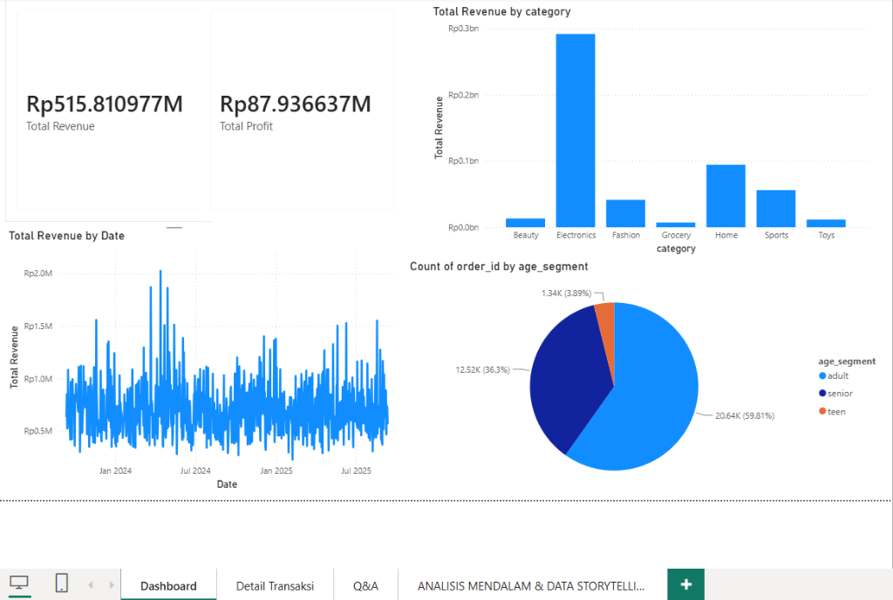

Halo, saya Muhamad Al Ghifari.
Spesialis di bidang Geographic Information System (GIS), analisis data spasial, dan visualisasi dashboard interaktif. Terampil mengembangkan solusi pemetaan digital berbasis WebGIS serta pemodelan data spasio-temporal.
Muhamad Al Ghifari
GIS Specialist & Data Analyst
Tentang Saya
Memadukan kekuatan Sistem Informasi Geografis (SIG/GIS) dan Business Intelligence untuk mengubah data mentah dan koordinat spasial menjadi wawasan strategis yang mudah dipahami.
Berpengalaman dalam pengolahan data geospasial menggunakan QGIS, perancangan dashboard analitik interaktif dengan Power BI & Excel tingkat lanjut, hingga pembangunan platform WebGIS sederhana yang responsif untuk visualisasi peta publik maupun kebutuhan organisasi.
Dedikasi & Semangat Belajar
Proyek Mandiri & Tim Selesai
Spatial Analysis, WebGIS, Business Intelligence & Dashboarding
Pendidikan & Pengalaman
DPRD Provinsi DKI Jakarta
Internship / Magang
Terlibat dalam kegiatan pendukung operasional, pengelolaan data administrasi & informasi, serta observasi alur kerja pemerintahan daerah tingkat provinsi.
Universitas Bakrie
Mahasiswa Aktif (Tahun Masuk 2023)
Fokus pada pendalaman teknologi komputasi, sains data, Sistem Informasi Geografis (GIS), serta implementasi aplikasi web dan analisis spasial.
SMA Muhammadiyah 5
Lulus Tahun 2023
Menyelesaikan pendidikan menengah atas dengan minat tinggi dalam bidang sains, penalaran logika, dan dasar-dasar teknologi komputer.
Keahlian & Tools
GIS & Spatial Analysis
Penguasaan QGIS untuk georeferencing, digitasi, analisis spasial vektor/raster, buffer, overlay, dan pembuatan peta tematik standar kartografi.
WebGIS & Frontend
Pengembangan WebGIS interaktif & website sederhana memanfaatkan Leaflet JS, MapLibre, HTML5, CSS3/Tailwind, dan JavaScript.
Data Analytics & Power BI
Pembuatan interactive dashboard dengan Power BI, pemodelan data terstruktur, kalkulasi DAX dasar, dan penyusunan KPI visual.
Spreadsheet & Data Processing
Pengolahan data tabular menggunakan Microsoft Excel (Pivot Table, XLOOKUP, Index-Match, Data Cleaning & Power Query).
Proyek Pilihan
WebGIS Kawasan Rawan Bencana Banda Aceh
Platform sistem informasi geografis interaktif untuk memetakan kawasan rawan bencana (tsunami/banjir) di Kota Banda Aceh. Dilengkapi layer switcher interaktif (batas kecamatan, jaringan jalan, titik bencana), multi-basemap (OSM, Satelit, Topografi), pencarian wilayah, panel statistik spasial, hingga fitur asisten chatbot terintegrasi.

Sales & Revenue Analytics Dashboard
Dashboard analitik performa penjualan retail/e-commerce komprehensif. Menampilkan pemantauan Total Revenue (Rp515,8M) & Total Profit (Rp87,9M), breakdown pendapatan per kategori produk (Electronics, Home, Sports), visualisasi tren penjualan harian, serta segmentasi demografi pelanggan berdasarkan kelompok usia.
Kontak & Terhubung
Tertarik berkolaborasi atau sekadar menyapa?
Kotak masuk saya selalu terbuka untuk tawaran magang, proyek pemetaan WebGIS, visualisasi analitik data, atau obrolan santai seputar teknologi spasial.